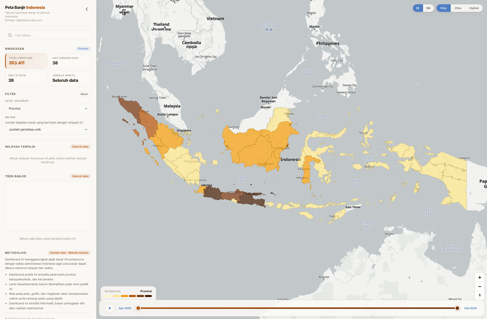

NUS · 2026
NUS Achievement Awards recipient
Recognised under Competitions (General) for the St. Gallen Global Essay Competition result.
Migunani is a Javanese word for being useful or beneficial to others.
Growing up, two Javanese sayings have lived rent-free in my head: urip iku urup—a life should bring light to others—and ngelmu iku kalakone kanthi laku—knowledge has to be lived, not just learned. I’ve always wanted to be part of work that matters to other people. I also want to do that work well, and see how far I can take it.
That has taken me through community work, research, and policy, often alongside people who have taught me a great deal. This page brings those experiences together with the opportunities and recognition I’ve received. I’m proud of what I’ve done so far, grateful for who made it possible, and keen to put what I’ve learned to use in bigger ways.
Recognised under Competitions (General) for the St. Gallen Global Essay Competition result.
Selected as a Leader of Tomorrow; one of three winners from approximately 1,000 graduate and postgraduate submissions.
Selected for Pacific Forum’s Young Leaders delegation to the 39th Asia-Pacific Roundtable in Kuala Lumpur, convened by ISIS Malaysia. During the same visit, I also joined the NextGen Masterclass on Track II diplomacy facilitated by the Asia New Zealand Foundation.
A free way to explore about 26 years of flood records across Indonesia. Explore the map ↗
I was a natural science student in high school, but much of my time outside class went into organisations, volunteering, and youth programmes. Through Mubaligh Hijrah, I spent time in two rural communities, one in Central Java and another in Kulon Progo, where we lived alongside local communities and worked with local leaders on activities for residents.
That was only one part of the community work I joined. Through bakti sosial and similar initiatives, we also raised or collected money and other resources to be distributed to people who needed them. These were usually simple activities, but they gave me some of my earliest experiences of working outside school with communities very different from my own.
I was also drawn to programmes that pushed me outside the classroom. I joined the Social Youth Camp, reached the final stage of Forum Pelajar Indonesia, and entered a university-level MUN while still in high school.
At school, I was involved in Mu’allimin Scientific Community (MSC), where we introduced the school’s first water-rocket activity. What began as a small science initiative continued after I graduated, with MSC still organising water-rocket activities years later.
None of this felt like a career plan at the time. I simply liked being involved, trying things that had not been done before, and taking responsibility when something needed to get done.
At Universitas Muhammadiyah Yogyakarta, I moved between student government, research, external relations, communications, teaching support, and event organising. I helped put together public discussions, seminars, and programmes that depended on many people doing their part.
During the pandemic, I founded Ruang Virtual and worked on its partnerships, content, and communications. I also became increasingly involved in research and policy work through IPIREL and other academic and organisational roles.
I enjoyed the work behind an event as much as the event itself: contacting people, working out what a discussion should cover, finding the right partners, and making sure the whole thing actually happened. Years later, I was still doing versions of that work through Coffee Chat on Energy Transition and NariTalk: Policy for Sustainable Development.
That period taught me that I enjoyed not only joining conversations, but helping create the conditions for useful conversations to happen.
My studies eventually took me from Indonesia to Taiwan, the United Kingdom, Singapore, and Switzerland. The route to postgraduate study involved many applications and plenty of rejection. Eventually, I received several competitive, merit-based scholarship awards and offers across Australia, Indonesia, Singapore, and the UK. I chose the Low Tuck Kwong Foundation Scholarship to pursue my master’s at NUS.
The opportunities extended beyond university. I joined Pacific Forum’s Young Leaders programme and its delegation to the Asia-Pacific Roundtable, participated in the Asia New Zealand Foundation’s NextGen Masterclass on Track II diplomacy, and began presenting my own work in Singapore and Switzerland.
Research also became a much clearer part of what I wanted to do. Through AidData, NUS, my master’s thesis, and later independent projects, I became increasingly interested in how investment, development finance, institutions, and public narratives shape who benefits from economic change.
I had spent years helping organise and join discussions. I was now contributing more of my own ideas to them, and beginning to build a research agenda of my own.
Some of the work I care about most is made for people who may never read an academic paper. I built Peta Banjir Indonesia so that researchers, officials, and communities could explore long-term flood patterns at the district level. My Care Sovereignty Protocol began with a different, less visible problem: the long-term financial costs borne by unpaid caregivers. I presented that proposal at St. Gallen, where it placed second in the Global Essay Competition and was subsequently recognised by NUS.
I have also tried to make other parts of my research more accessible through dashboards, datasets, and public-facing tools. The format changes depending on the problem, but the question is usually similar: once we understand something better, how can we make that knowledge useful to someone else?
That question is probably the closest thing I have to a through-line.

Peta Banjir Indonesia · launched 2026